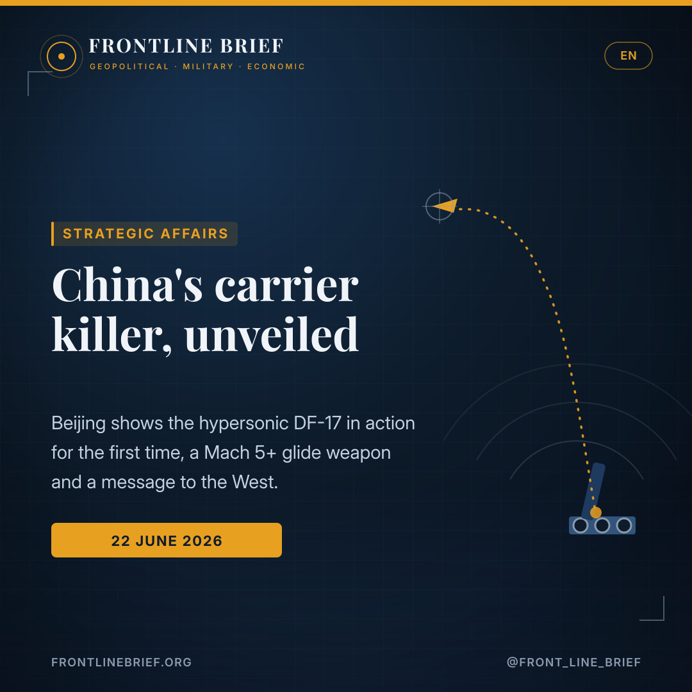

China shows its hand: the DF-17 'carrier killer' goes public as a message to the West
For the first time, Chinese state television has shown the hypersonic DF-17 in action, firing from a transporter in the Gobi during large-scale PLA drills. The Mach 5-plus glide weapon, dubbed a "carrier killer", has been seen in public only twice before — and analysts read its sudden screen debut, days after the G7, as deliberate signalling to Washington.



Out of the shadows
State broadcaster CCTV aired footage of the DF-17 during PLA Rocket Force drills in the Gobi, showing the transporter taking position and the launch itself. Before this, the missile had been seen publicly only at the 2019 and 2025 parades.
Mach 5+, and it maneuvers
The DF-17 carries a DF-ZF hypersonic glide vehicle, exceeds Mach 5 and ranges out to about 2,500 km. It can change course and maneuver in flight, which is why analysts call it almost impossible to intercept once launched.
A signal to Washington
The footage was released just after the G7 summit in France. Analysts read the timing as deterrence signalling toward the US and the West, and as a claim that Chinese military technology now rivals America's.
A weapon steps out of the shadows
China has, for the first time, let the cameras roll on one of its most closely held weapons. During recent large-scale exercises, units of the PLA Rocket Force trained alongside the army and air force in the Gobi desert, rehearsing strikes under deliberately harsh and complex conditions, with the hypersonic DF-17 cast as the star of the show. State broadcaster CCTV aired the footage, including the moment the launch vehicle moves into position and the missile leaves the rail.
Boost, glide, maneuver
The DF-17 is not a conventional ballistic missile. It lofts a DF-ZF hypersonic glide vehicle, which separates and then skims the upper atmosphere at more than five times the speed of sound, with a reach of roughly 2,500 kilometres. What unsettles Western planners is not raw speed alone but the way the glider behaves: it can change course, weave and adjust toward its target in flight, which is precisely what makes a clean interception so hard once the weapon is away.
The DF-17's debut was choreography as much as capability — a hypersonic weapon shown off precisely when Beijing wanted Washington to be watching.
Carrier killer — and the nuclear question
Chinese commentators have long branded the DF-17 a "carrier killer", and the threat it poses to US naval power is the heart of its reputation. Beijing's analysts insist the missile carries conventional warheads; Washington is less sure, and warns that the design could in principle take a nuclear payload. Either way, the combination of speed, range, maneuver and accuracy is meant to hold large surface ships at risk far from China's coast.
Why now: the politics of timing
The capability is not new; the publicity is. The clip surfaced only after the G7 summit in France had wrapped up, and that sequencing is widely read as the point. By choosing this moment to parade a weapon that had appeared in public just twice before — at the national-day parades of 2019 and 2025 — Beijing was speaking to an audience in Western capitals as much as to its own.
The bigger picture
The DF-17 belongs to the wider Dongfeng family, alongside systems such as the DF-26, DF-31, DF-61 and DF-5, each built for a particular job in China's strike and deterrence architecture. Showing the hypersonic glider in the field carries a symbolic charge: it is Beijing's way of asserting that it has closed the gap with the United States in some of the most demanding corners of missile technology.
Ένα όπλο βγαίνει από τη σκιά
Για πρώτη φορά, η Κίνα άφησε τις κάμερες να καταγράψουν ένα από τα πιο καλά φυλασσόμενα όπλα της. Στο πλαίσιο πρόσφατων ασκήσεων μεγάλης κλίμακας, μονάδες της Πυραυλικής Δύναμης του Λαϊκού Απελευθερωτικού Στρατού εκπαιδεύτηκαν μαζί με τον στρατό ξηράς και την αεροπορία στην έρημο Γκόμπι, προσομοιώνοντας προσβολές υπό σκόπιμα αντίξοες και σύνθετες συνθήκες, με τον υπερηχητικό DF-17 στον ρόλο του πρωταγωνιστή. Η κρατική τηλεόραση CCTV μετέδωσε τα πλάνα, ανάμεσά τους τη στιγμή που το όχημα μεταφοράς παίρνει θέση και την ίδια την εκτόξευση.
Ώθηση, ολίσθηση, ελιγμός
Ο DF-17 δεν είναι κλασικός βαλλιστικός πύραυλος. Εκτοξεύει ένα υπερηχητικό όχημα ολίσθησης τύπου DF-ZF, το οποίο, αφού αποχωριστεί, «γλιστρά» στα ανώτερα στρώματα της ατμόσφαιρας με ταχύτητες πάνω από πέντε φορές την ταχύτητα του ήχου, με βεληνεκές γύρω στα 2.500 χιλιόμετρα. Εκείνο που προβληματίζει τη Δύση δεν είναι μόνο η ταχύτητα, αλλά η συμπεριφορά του οχήματος: αλλάζει πορεία, ελίσσεται και διορθώνει την τροχιά του προς τον στόχο εν πτήσει — γι' αυτό και θεωρείται σχεδόν αδύνατο να αναχαιτιστεί μόλις εκτοξευθεί.
Το ντεμπούτο του DF-17 ήταν τόσο σκηνοθεσία όσο και δυνατότητα: ένα υπερηχητικό όπλο που επιδείχθηκε ακριβώς τη στιγμή που το Πεκίνο ήθελε να το βλέπει η Ουάσιγκτον.
«Φονιάς αεροπλανοφόρων» και το πυρηνικό ερώτημα
Οι Κινέζοι σχολιαστές έχουν εδώ και καιρό βαφτίσει τον DF-17 «φονιά αεροπλανοφόρων», και η απειλή που συνιστά για την αμερικανική ναυτική ισχύ βρίσκεται στον πυρήνα της φήμης του. Το Πεκίνο επιμένει ότι ο πύραυλος φέρει συμβατικές κεφαλές· η Ουάσιγκτον είναι λιγότερο βέβαιη και προειδοποιεί ότι ο σχεδιασμός θα μπορούσε καταρχήν να δεχθεί και πυρηνικό φορτίο. Σε κάθε περίπτωση, ο συνδυασμός ταχύτητας, βεληνεκούς, ελιγμού και ακρίβειας στοχεύει να κρατά τα μεγάλα επιφανειακά πλοία υπό απειλή πολύ μακριά από τις κινεζικές ακτές.
Γιατί τώρα: η πολιτική του χρονισμού
Η δυνατότητα δεν είναι καινούργια· η δημοσιότητα είναι. Το βίντεο εμφανίστηκε μόλις είχε ολοκληρωθεί η Σύνοδος των G7 στη Γαλλία, και αυτή ακριβώς η αλληλουχία θεωρείται το ζητούμενο. Επιλέγοντας αυτή τη στιγμή για να προβάλει ένα όπλο που είχε εμφανιστεί δημόσια μόλις δύο φορές — στις παρελάσεις της εθνικής επετείου το 2019 και το 2025 — το Πεκίνο απευθυνόταν στο κοινό των δυτικών πρωτευουσών όσο και στο δικό του.
Η ευρύτερη εικόνα
Ο DF-17 ανήκει στην ευρύτερη «οικογένεια» Dongfeng, μαζί με συστήματα όπως τα DF-26, DF-31, DF-61 και DF-5, καθένα φτιαγμένο για μια συγκεκριμένη αποστολή στην αρχιτεκτονική κρούσης και αποτροπής της Κίνας. Η επίδειξη του υπερηχητικού οχήματος στο πεδίο έχει συμβολικό βάρος: είναι ο τρόπος του Πεκίνου να διακηρύξει ότι έχει κλείσει την απόσταση από τις Ηνωμένες Πολιτείες σε μερικές από τις πιο απαιτητικές γωνιές της πυραυλικής τεχνολογίας.
Une arme sort de l'ombre
Pour la première fois, la Chine a laissé les caméras filmer l'un de ses systèmes les plus jalousement gardés. Lors de récents exercices de grande ampleur, des unités de la Force des fusées de l'APL se sont entraînées aux côtés de l'armée de terre et de l'armée de l'air dans le désert de Gobi, simulant des frappes dans des conditions volontairement rudes et complexes, avec le missile hypersonique DF-17 en vedette. La télévision d'État CCTV a diffusé les images, dont la mise en position du véhicule lanceur et le tir lui-même.
Propulsion, plané, manœuvre
Le DF-17 n'est pas un missile balistique ordinaire. Il emporte un planeur hypersonique DF-ZF qui, une fois séparé, rase la haute atmosphère à plus de cinq fois la vitesse du son, avec une portée d'environ 2 500 kilomètres. Ce qui inquiète les planificateurs occidentaux n'est pas la seule vitesse, mais le comportement du planeur : il change de cap, louvoie et corrige sa trajectoire vers la cible en vol — ce qui rend une interception propre quasi impossible une fois l'engin parti.
Les débuts du DF-17 relevaient autant de la mise en scène que de la capacité : une arme hypersonique exhibée précisément quand Pékin voulait que Washington regarde.
« Tueur de porte-avions » et la question nucléaire
Les commentateurs chinois ont depuis longtemps surnommé le DF-17 « tueur de porte-avions », et la menace qu'il fait peser sur la puissance navale américaine est au cœur de sa réputation. Pékin assure que le missile emporte des charges conventionnelles ; Washington en doute et avertit que la conception pourrait, en principe, recevoir une charge nucléaire. Quoi qu'il en soit, le mélange de vitesse, de portée, de manœuvre et de précision vise à maintenir les grands bâtiments de surface sous la menace, loin des côtes chinoises.
Pourquoi maintenant : la politique du calendrier
La capacité n'est pas nouvelle ; sa publicité, si. La séquence n'est apparue qu'une fois le sommet du G7 en France achevé, et c'est précisément cet enchaînement qui fait sens. En choisissant ce moment pour exhiber une arme qui n'avait été montrée en public que deux fois — aux défilés de la fête nationale de 2019 et de 2025 — Pékin s'adressait autant aux capitales occidentales qu'à son propre public.
Le tableau d'ensemble
Le DF-17 appartient à la vaste famille Dongfeng, aux côtés de systèmes comme les DF-26, DF-31, DF-61 et DF-5, chacun taillé pour une mission précise dans l'architecture de frappe et de dissuasion chinoise. Montrer le planeur hypersonique sur le terrain a une charge symbolique : c'est la manière qu'a Pékin d'affirmer qu'il a comblé l'écart avec les États-Unis dans certains des domaines les plus exigeants de la technologie des missiles.
Et våben træder ud af skyggen
For første gang har Kina ladet kameraerne køre på et af sine mest hemmeligholdte våben. Under nylige storstilede øvelser trænede enheder fra PLA's Raketstyrke sammen med hæren og flyvevåbnet i Gobi-ørkenen og øvede angreb under bevidst barske og komplekse forhold, med det hypersoniske DF-17 i hovedrollen. Statskanalen CCTV viste optagelserne, heriblandt det øjeblik, hvor affyringskøretøjet kører i position, og selve affyringen.
Boost, glidning, manøvre
DF-17 er ikke et almindeligt ballistisk missil. Det løfter et hypersonisk glidefartøj af typen DF-ZF, som efter adskillelsen skummer den øvre atmosfære med mere end fem gange lydens hastighed og en rækkevidde på omkring 2.500 kilometer. Det, der bekymrer vestlige planlæggere, er ikke farten alene, men måden glideren opfører sig på: den skifter kurs, slingrer og justerer mod målet undervejs — netop derfor anses en ren afskæring for næsten umulig, når våbnet først er afsted.
DF-17's debut var lige så meget iscenesættelse som kapacitet — et hypersonisk våben fremvist præcis, da Beijing ønskede, at Washington kiggede med.
Hangarskibsdræber — og atomspørgsmålet
Kinesiske kommentatorer har længe døbt DF-17 en "hangarskibsdræber", og truslen mod amerikansk flådemagt er kernen i dens ry. Beijing fastholder, at missilet bærer konventionelle sprænghoveder; Washington er mindre sikker og advarer om, at designet i princippet kan rumme en atomladning. Uanset hvad skal kombinationen af fart, rækkevidde, manøvre og præcision holde store overfladeskibe truet langt fra Kinas kyst.
Hvorfor nu: timingens politik
Kapaciteten er ikke ny; det er offentliggørelsen. Klippet dukkede først op, efter at G7-topmødet i Frankrig var afsluttet, og netop den rækkefølge opfattes som pointen. Ved at vælge dette øjeblik til at fremvise et våben, der kun var set offentligt to gange — ved nationaldagsparaderne i 2019 og 2025 — talte Beijing lige så meget til vestlige hovedstæder som til sit eget publikum.
Det store billede
DF-17 hører til den brede Dongfeng-familie ved siden af systemer som DF-26, DF-31, DF-61 og DF-5, hver bygget til en bestemt opgave i Kinas slag- og afskrækkelsesarkitektur. At vise den hypersoniske glider i felten har en symbolsk vægt: det er Beijings måde at hævde, at det har lukket afstanden til USA i nogle af de mest krævende hjørner af missilteknologien.
Ett vapen kliver fram ur skuggan
För första gången har Kina låtit kamerorna rulla på ett av sina mest hemlighållna vapen. Under nyligen genomförda storskaliga övningar tränade förband ur PLA:s raketstyrka tillsammans med armén och flygvapnet i Gobiöknen, och övade anfall under medvetet hårda och komplexa förhållanden, med den hypersoniska DF-17 i huvudrollen. Statliga CCTV sände bilderna, däribland ögonblicket när avfyrningsfordonet kör i position och själva avfyrningen.
Boost, glidning, manöver
DF-17 är ingen vanlig ballistisk robot. Den lyfter en hypersonisk glidfarkost av typen DF-ZF som, efter separationen, skummar den övre atmosfären i mer än fem gånger ljudets hastighet och med en räckvidd på omkring 2 500 kilometer. Det som oroar västliga planerare är inte enbart farten utan hur glidaren beter sig: den byter kurs, slingrar och justerar mot målet under flykten — just därför betraktas en ren bekämpning som närmast omöjlig när vapnet väl är iväg.
DF-17:s debut var lika mycket regi som förmåga — ett hypersoniskt vapen som visades upp precis när Peking ville att Washington skulle titta på.
Hangarfartygsdödare — och kärnvapenfrågan
Kinesiska kommentatorer har länge döpt DF-17 till "hangarfartygsdödare", och hotet mot amerikansk sjömakt är kärnan i dess rykte. Peking håller fast vid att roboten bär konventionella stridsspetsar; Washington är mindre säker och varnar för att konstruktionen i princip kan rymma en kärnladdning. Oavsett vilket ska kombinationen av fart, räckvidd, manöver och precision hålla stora ytfartyg hotade långt från Kinas kust.
Varför nu: tajmingens politik
Förmågan är inte ny; offentliggörandet är det. Klippet dök upp först sedan G7-toppmötet i Frankrike avslutats, och just den ordningsföljden uppfattas som poängen. Genom att välja detta ögonblick för att visa upp ett vapen som bara setts offentligt två gånger — vid nationaldagsparaderna 2019 och 2025 — talade Peking lika mycket till västliga huvudstäder som till sin egen publik.
Den större bilden
DF-17 tillhör den breda Dongfeng-familjen, vid sidan av system som DF-26, DF-31, DF-61 och DF-5, vart och ett byggt för en bestämd uppgift i Kinas slag- och avskräckningsarkitektur. Att visa glidfarkosten i fält bär en symbolisk laddning: det är Pekings sätt att hävda att man har slutit gapet till USA i några av de mest krävande hörnen av robotteknologin.
Sources
- OnAlert.gr — DF-17: Για πρώτη φορά η Κίνα αποκάλυψε τον πύραυλο «φονιά αεροπλανοφόρων» εν δράσει (Άρης Δημητράτος, 22 June 2026)
- Global Times / CCTV — coverage of the PLA Rocket Force exercises and DF-17 footage
- Frontline Brief background — the Dongfeng missile family and hypersonic glide vehicles